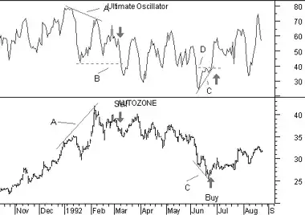

Ultimate Oscillator
Overview
Oscillators typically compare a security's smoothed price with its price x-periods ago.
Larry Williams noted that the value of this type of oscillator can vary greatly depending
on the number of time periods used during the calculation. Thus, he developed the Ultimate
Oscillator that uses weighted sums of three oscillators, each of which uses a different
time period.
The three oscillators are based on Williams' definitions of buying and selling
"pressure."
Interpretation
Williams recommends that you initiate a trade following a
divergence and a breakout in the Ultimate
Oscillator's trend. The following text sumarizes these rules.
Buy when:
- A bullish divergence occurs. This is when the security's price makes a lower
low that is not confirmed by a lower low in the Oscillator.
- During the bullish divergence, the Oscillator falls below 30.
- The Oscillator then rises above the highest point reached during the span of the
bullish divergence. This is the point at which you buy.
Close long positions when:
- The conditions are met to sell short (explained below), or
- The Oscillator rises above 50 and then falls below 45, or
- The Oscillator rises above 70. (I sometimes wait for the oscillator to then fall
below 70.)
Sell short when:
- A bearish divergence occurs. This is when the security's price makes a higher high
that is not confirmed by a higher high in the Oscillator.
- During the bearish divergence, the Oscillator rises above 50.
- The Oscillator then falls below the lowest point reached during the span of the
bearish divergence. This is the point at which you sell short.
Close short positions when:
- The conditions are met to buy long (explained above), or
- The Oscillator rises above 65, or
- The Oscillator falls below 30. (I will sometimes wait for the oscillator to then
rise above 30.)
Example
The following chart shows Autozone and its
Ultimate Oscillator.

I drew "sell" arrows when the conditions for a sell signal were
met:
- A bearish divergence occurred (lines "A") when prices made a new high that was not
confirmed by the Oscillator.
- The Oscillator rose above 50 during the divergence.
- The Oscillator fell below the lowest point reached during the span of the divergence
(line "B").
Similarly, I drew "buy" arrows when the conditions for a buy signal were met:
- A bullish divergence occurred (lines "C") then prices made a new low that was not
confirmed by the Oscillator.
- The Oscillator fell below 30 during the divergence.
- The Oscillator rose above the highest point reached during the span of the
divergence (line "D").